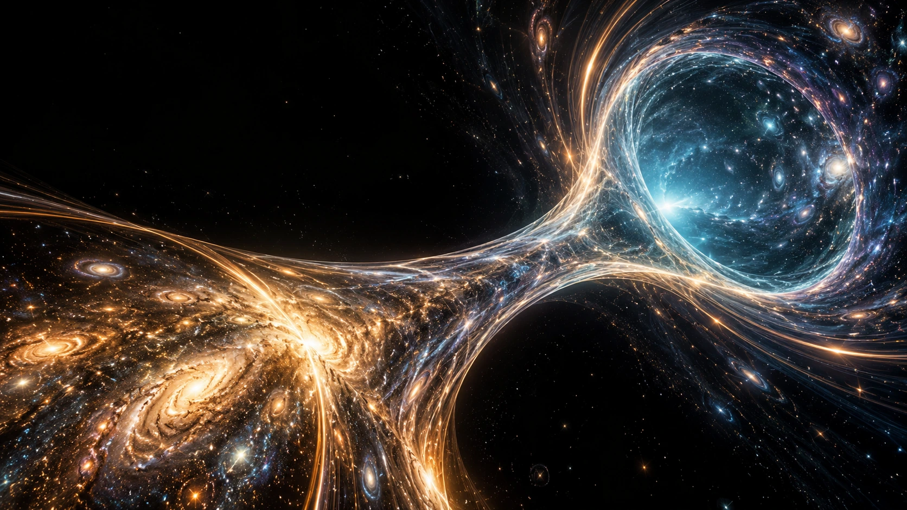

01COSMIC / CONNECTION
Bridge of Light
What if a connection became a landscape?
AI-generated · 4 October 2026 · Inspired by the owner’s LumenCore research notes. Speculative concept artwork; no functioning device demonstrated.

A LUMENCORE VISUAL STUDY / VOL. 02
Imagination gives us a direction.
Mathematics gives us something to test.
VISION × CALCULATION
Human vision brings the question. Geometry gives it form. Calculation makes a small part of it testable. Here, those ways of thinking share the same space.
Inspired by LumenCore's wormhole and EchoForm research notes, these six AI-assisted artworks explore toroidal chambers, spiral structures and geometric networks. They are speculative visual concepts, not demonstrations of functioning wormholes.
SIX WORLDS / SIX POINTS OF VIEW
Choose a world to view it closely.
Each begins with a different question.
What if a connection became a landscape?
AI-generated · 4 October 2026 · Inspired by the owner’s LumenCore research notes. Speculative concept artwork; no functioning device demonstrated.
Distance, made visible.
AI-generated · 4 October 2026 · Inspired by the owner’s LumenCore research notes. Speculative concept artwork; no functioning device demonstrated.
A chamber built around a question.
AI-generated · 4 October 2026 · Inspired by the owner’s LumenCore research notes. Speculative concept artwork; no functioning device demonstrated.
Many local forms. One larger structure.
AI-generated · 4 October 2026 · Inspired by the owner’s LumenCore research notes. Speculative concept artwork; no functioning device demonstrated.
A small shift changes the whole pattern.
AI-generated · 4 October 2026 · Inspired by the owner’s LumenCore research notes. Speculative concept artwork; no functioning device demonstrated.
Intuition and structure, in conversation.
AI-generated · 4 October 2026 · Inspired by the owner’s LumenCore research notes. Speculative concept artwork; no functioning device demonstrated.
MOVE FROM LOOKING TO EXPLORING
Two idealized models.
Every assumption in view.
Set a distance. See the travel time implied by the exact speed of light in vacuum.
t = d / c c = 299,792,458 m/s exactly
Assumes a straight path in vacuum between stationary endpoints. Real links add effects from the medium, route and processing.
Constant reference · NIST ↗Change their relative phase. Watch the sum move between reinforcement and cancellation.
Peak of sum × either input amplitude
y = sin(θ − τ) + sin(θ − τ + φ)
Equal amplitudes and frequencies in a linear model. Vertical scale: −2 to +2. Interference patterns do not establish energy gain.
Superposition reference · MIT OpenCourseWare ↗The artworks are imaginative interpretations. The controls above calculate only the stated elementary models. Artwork provenance ↗
THE NEXT QUESTION
A compelling idea becomes useful when someone can inspect its assumptions, repeat its calculation and compare its result.
Explore the validation path ↗